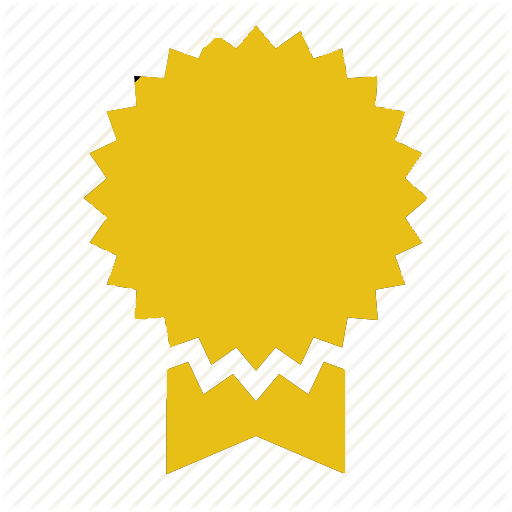
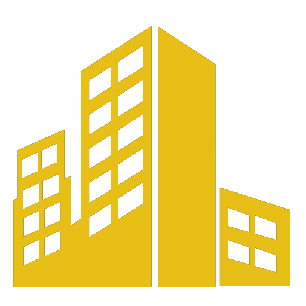
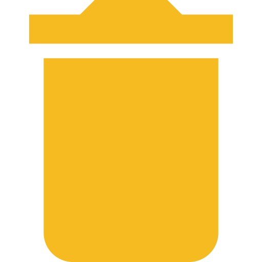

        <!-- ============================================================== -->
        <!-- Left Sidebar - style you can find in sidebar.scss  -->
        <!-- ============================================================== -->
        <aside class="left-sidebar t" >
            <!-- Sidebar scroll-->
            <div class="scroll-sidebar">
                <!-- Sidebar navigation-->
                <hr>
                <nav class="sidebar-nav">
                    <ul id="sidebarnav">
                        <!-- User Profile-->
                        <li class="sidebar-item">
                            <a class="sidebar-link waves-effect waves-dark sidebar-link" href="accueil" aria-expanded="false">
                                
                                <span class="hide-menu"><b style="margin-left: 5px;"> Accueil</b></span>
                            </a>
                        </li>
                        <li class="sidebar-item">
                            <a class="sidebar-link waves-effect waves-dark sidebar-link" href="services" aria-expanded="false">
                                <!-- <i class="fas fa-tasks" aria-hidden="true" style="color: #f5bb20;"></i> -->
                                
                                <span class="hide-menu"><b>Gestion Servives</b></span>
                            </a>
                        </li>
                        <li class="sidebar-item">
                            <a class="sidebar-link waves-effect waves-dark sidebar-link" href="specialites" aria-expanded="false">
                                <!-- <i class="fa fa-users" aria-hidden="true" style="color: #f5bb20;"></i> -->
                                
                                <span class="hide-menu"><b style="margin-left: 5px;">Gestion Spécialités</b></span>
                            </a>
                        </li>
                        <li class="sidebar-item">
                            <a class="sidebar-link waves-effect waves-dark sidebar-link" href="villes" aria-expanded="false">
                                <!-- <i class="fa fa-users" aria-hidden="true" style="color: #f5bb20;"></i> -->
                                
                                <span class="hide-menu"><b style="margin-left: 5px;">Gestion Villes</b></span>
                            </a>
                        </li>
                        <li class="sidebar-item" *ngIf="adminConnect.profile === 'super_admin'">
                            <a class="sidebar-link waves-effect waves-dark sidebar-link" href="utilisateurs" aria-expanded="false">
                                
                                <span class="hide-menu"><b style="margin-left: 5px;">Gestion Utilisateurs</b></span>
                            </a>
                        </li>
                        <li class="sidebar-item">
                            <a class="sidebar-link waves-effect waves-dark sidebar-link" href="statistiques" aria-expanded="false">
                                
                                <span class="hide-menu"><b style="margin-left: 6px;"> Statistiques</b></span>
                            </a>
                        </li>

                        <li class="sidebar-item">
                            <a class="sidebar-link waves-effect waves-dark sidebar-link" href="corbeil" aria-expanded="false">
                                
                                <span class="hide-menu"><b style="margin-left: 6px;">Corbeille</b></span>
                            </a>
                        </li>
                        
                        
                        <li class="sidebar-item" style="padding-top: 30px;">
                            <a class="sidebar-link waves-effect waves-dark sidebar-link" (click)="logout()" aria-expanded="false">
                                <i class="fas fa-sign-out-alt" aria-hidden="true" style="color: #f5bb20; font-weight: bold; font-size: 25px;"></i>
                                <span class="hide-menu" style="color: #f5bb20; font-weight: bold;"><b>DECONNEXION</b></span>
                            </a>
                        </li>
                    </ul>
                </nav>
                <!-- End Sidebar navigation -->
            </div>
            <!-- End Sidebar scroll-->
        </aside>
        
